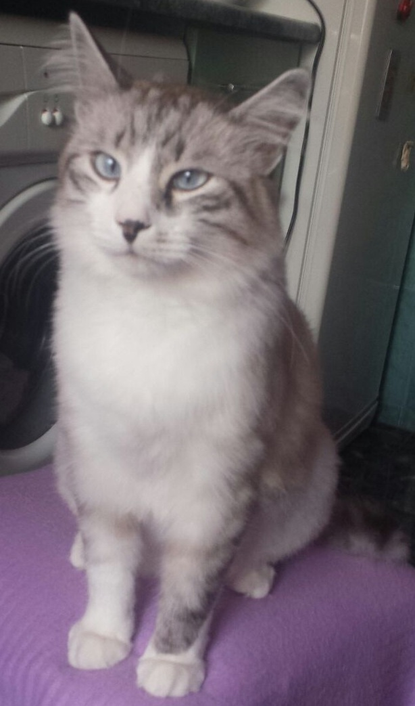

Terapie cu glume
Glumele sunt o modalitate excelenta de a aduce zambete pe fetele oamenilor. Iata cateva:
- Un schelet intră într-un bar, merge la barman și comandă: „Băiete, o bere și un mop.
- Ştiti ce fac două albine pe Lună? Luna de miere.
- Lupul,lihnit de foame, bate la usa celor trei iezi si incepe sa cante: Trei iezi cucuieti… Iedul cel mare: Fraiere, ne-am pus vizor!
Terapie prin ascultare
Iata cum te pot asculta:
- Ascultare activa fara a judeca.
- Spatiu sigur pentru descarcare emotionala.
- Feedback plin de empatie.
- Tacere confortabila.
- Prezenta constienta
Terapie cu pisici
